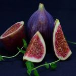
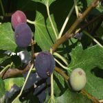

무화과
무화과(無花果)는 무화과나무속 나무의 열매로, 대개 무화과나무의 열매를 말한다.과일로 먹는다.무화과(無花果)’라는 이름은 꽃이 없이 열리는 열매라는 뜻으로 실제로는 열매 안의 꽃이 보이지 않는 것에 불과하다. 무화과는 히솝(우슬초), 포도, 겨자씨, 올리브 등과 더불어 성경에 등장하는 식물이기도 하다.
무화과는 뽕나무과(Moraceae)의 무화과속(Ficus L.) 식물로 염색체는 2n=26을 가진 아열대성 난지과수(暖地果樹)이다. 원산지의 기후 환경 적응성에 비추어 볼 때 아열대 지역의 교목성(喬木性) 낙엽과수로 우리나라에서는 여름철에는 전국 어디서나 생육이 가능한 식물이며 우리나라에서 자연 방임된 무화과는 2～5m의 높이와 수관(樹冠)을 이룬다. 기후 조건이 알맞은 외국에서는 나무 높이(樹高)가 20m에 이르며 100년 이상된 거목도 있다고 알려지고 있다. 겨울철 영하 7～8℃ 내외에서 동해(凍害)를 받기 쉬어 겨울나기가 어렵다. 우리나라에서 재배적지는 전남, 경남의 해안지대와 제주도 등지에서 재배가 가능하다. 무화과는 강수량이 적고 온화한 환경을 좋아하나 뿌리 분포가 얕아 심한 건조나 침수에 약한 편이다. 특히 과수 중에서 가장 알카리성 토양을 좋아하여 토양산도 pH 7.0～7.5 범위의 토양에서 잘 자란다. 잎은 손가락을 편 것과 같은 3～7열의 열각(裂刻)을 이루고 있으며 비교적 잎이 크고 두꺼우며 20℃ 내외의 온도가 되는 5월초에 잎이 트고 10월 하순경 서리 내릴 때 낙엽이 진다. 줄기는 품종에 따라 다르나 5～20㎝의 마디를 이루며 마디마다 잎을 내며 잎겨드랑이(葉腋)에 과실이 맺게 된다. 보통은 1마디에 1개의 과실을 맺으나 2～3개의 과실을 맺는 품종도 있다. 가지는 비교적 유연하며 속이 약간 비어있는 수부(髓部)가 발달되어 있다. 1개의 가지에서 10～20개 내외의 과실을 맺는 풍산성(豊産性) 과수이다. 나무의 잎, 줄기, 뿌리, 과실에도 상처를 입거나 절단되면 백색의 유액(乳液)을 내는 특성이 있다. 이 유액에는 피신(ficin)이라는 단백질 분해 효소가 있어 피부에 접촉하면 상처를 입기도 한다.
무화과는 심는 당년부터 과실이 맺기도 하나 2년째부터 초기 수확을 할 수 있고 수형(樹形)이 완성되는 4년 이후부터는 정상수확을 할 수 있다. 식재후 7～15년을 성과기(盛果期)로 보며 그 이후로부터는 수세가 떨어지고 품질이 떨어진다. 무화과는 다른 과수에 비하여 속성과수이다. 무화과의 꽃눈(花芽)은 새가지의 자람과 동시에 이루어지며 각 마디의 잎겨드랑이(葉腋)마다 잎과 과실을 차차로 분화해 가는 습성이 있다.
무화과는 석회(Ca) 요구량이 매우 많고 약알카리성 토양을 좋아하며 pH 7.0～7.5까지의 중성, 약알카리성 토양조건이 가장 좋다. 다른 과수에 비해 비료의 흡수량이 적어 거의 퇴비 중심으로도 재배가 가능하나 매년 석회(Ca)를 기본적으로 사용하여 칼슘의 체내 흡수를 높여 주어야 한다.
과피(果皮)가 얇고 연약하여 수송성이 매우 낮다. 특히 우리나라의 추과(秋果) 중심의 생과(生果) 생산이 이루어지고 있는 8～9월의 태풍이 강우는 큰 피해를 가져온다. 시설하우스나 간이 비가림시설 재배로 비를 맞지 않게 재배하는 기술이 중요하다. 우리나라는 매우 적은 농가가 시설재배를 하고 있으나 일본은 60% 이상 농가가 시설재배로 안정생산에 주력하고 있다.
출처 본문 : 농사로 이미지: 구글 이미지
Table(s)
| 지역 | 파종기 | 수확기 |
|---|---|---|
| 남부서해안 | 4월 하∼5월 상 | 8월 중 |
| 남헤안 | 4월 하∼5월 상 | 8월 상 |